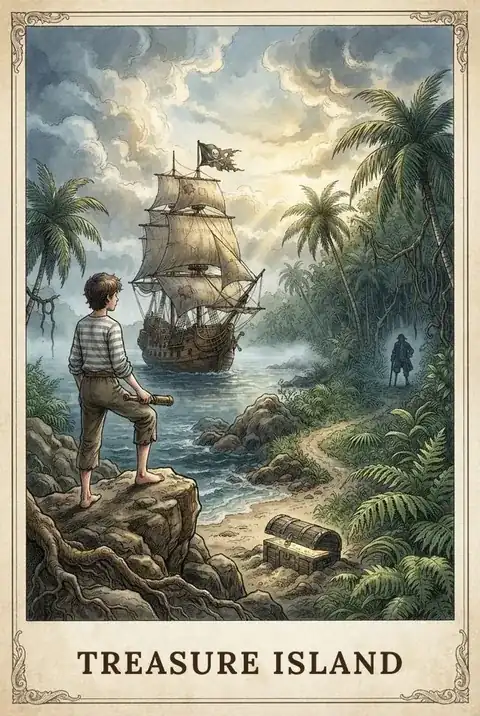
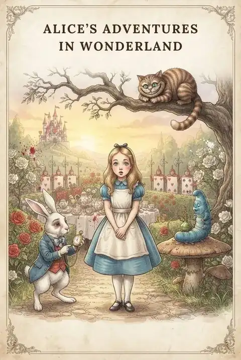
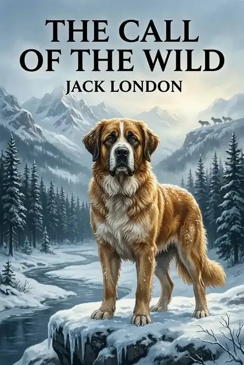
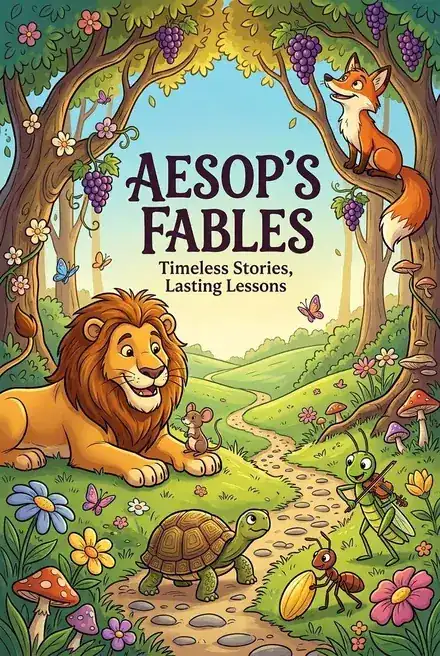
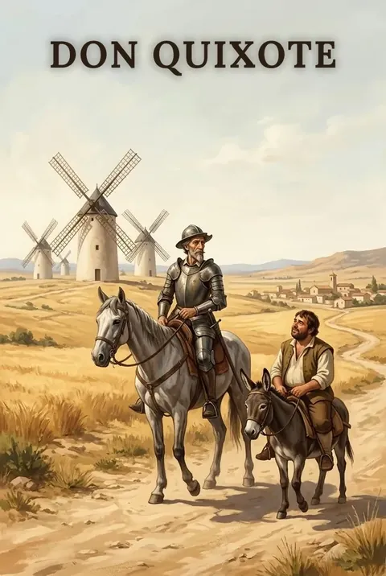
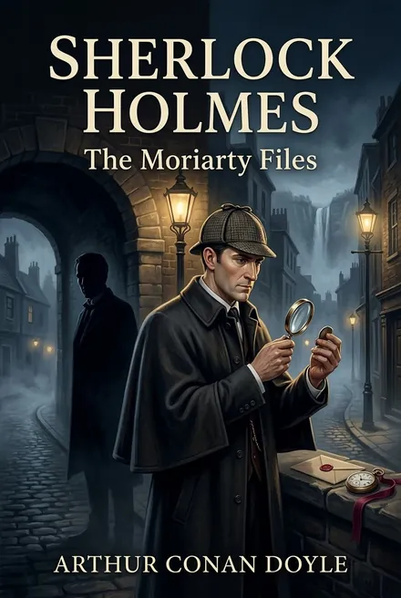

Catalog
Explore Collections & Categories
Choose a literary world to begin your journey.

Adventure & Exploration 3 stories Voyages, daring escapes and journeys into the unknown.
Fantasy & Wonder 4 stories Rabbit holes, talking creatures and worlds where logic bends.
Nature & Survival 3 stories Wild landscapes, hidden gardens and the struggle to survive.
Folktales & World Heritage 32 stories Traditional tales and fables from around the world.
Society, Family & Human Experience 6 stories Stories of family, community and the human heart.
Mystery, Horror & Science Fiction 5 stories Secrets, shadows and strange science, from detective puzzles to Gothic horror.